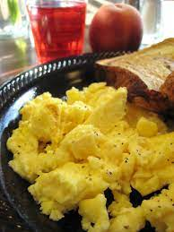

Scrambled Eggs

Description
Eggs are a healthy and nutritious option for breakfast and they can
easily be cooked in under 5 minutes with a few ingredients! Get cracking!
Ingredients
- Two or more eggs
- butter or oil of your choice
- salt and pepper
- optional add-ins: fresh herbs, cheese, ham, or any other vegetables
you have sitting in the fridge
Steps
- Heat oil or butter in a frying pan over medium heat
- Crack eggs into a small bowl and add salt and pepper. Using a fork or whisk, scramble the eggs
- Add your optional add-ins directly to your scrambled eggs or pre-heat them in the frying pan if necessary
- dd the eggs to the frying pan and use a spatula to move them around until they are evenly cooked through
- Remove eggs from pan, garnish fresh herbs and serve with fresh toast or tomato slices.